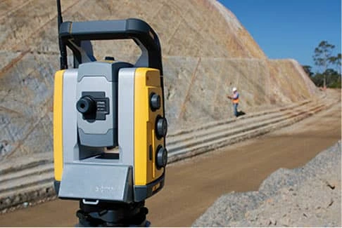

Экспертиза и техническая помощь
Сложность проекта земляных работ мобилизируео
группу технических экспертов и требует
разработки конкретного видения, идеально
адаптированного к требованиям вашего проекта. Мы также должны
уметь предвидеть любые невидимые препятствия,
которые могут нарушить плавный процесс строительных работ.
Обладая
обширным международным опытом в разработке и реализации
проектов линейной инфраструктуры,
мы обладаем всеми навыками, чтобы дать вам ясное и точное
видение на всех этапах процесса, связанного с реализацией.
Благодаря нашим методам и решениям вам станет легко
достичь своих целей и реализовать самые высокие
амбиции!
Топография и дизайн проекта
1
Предварительный технический проект:
Предварительный технический проект сначала
выполняется с помощью контурной карты. Этот
этап позволяет
определить технические гипотезы в соответствии с внутренними
и внешними характеристиками проекта.
Этот этап включает :
-
Общая ситуация на карте-
1/100000 или 1/20000
-
Ситуационный план карты -
1/10 000, включая кривые уровня
-
Представление трассы дороги
согласно 3 проектным допущениям
-
Сводный вертикальный
продольный разрез
-
Типовое поперечное сечение
-
Расчет геометрических
поверхностей и объемов
-
Сроки завершения посредством
сводного планирования
-
Оценка предварительной
стоимости работ
-
Техническое задание на
Предварительный Технический Проект "ПТП"
Это исследование направлено на то, чтобы предоставить вам первое
техническое
видение двухмерных и трехмерных геометрических
перспектив
вашего проекта. Это также дает возможность определиться с
выбором
наиболее подходящего технического решения, а
затем
разработать предварительный инженерный проект.
2
Предварительный инженерный дизайн :
Предварительный технический дизайн "ПТД"
следует из предварительного
технического проекта "ПТП" . Это дает
возможность детализировать
размеры и геометрическую схему проекта, а также
провести
топографические съемки прямо на месте.
Этот этап включает :
-
Топографические полевые
работы
-
Компьютерные операции
рисования
- План ситуации на карте
- Топографический план
-
Детальные планы в масштабе от
1/2000 до 1/500
-
Продольные сечения профиля в
масштабе плана.
-
Типичный профиль поперечного
сечения при 1/1000
-
Отчеты о расчетах сечений
земляных работ
- Выбор ресурсов
- Земляные работы
-
Согласованность
геотехнических исследований в отношении проекта, который будет
выполняться
-
Ревизия перемещений земли под
земляные работы по отчету инженерно-геологических изысканий.
-
Определение размеров
ресурсов, необходимых для выполнения проекта.
- Методология и этапы
- Детальное планирование
-
Детальные расчеты
поверхностей и объемов на всех этапах проекта
-
Геометрический дизайн дороги,
геотехнические и габаритные перспективы проекта.
-
Отчеты о специальных
технических разделах
-
Спецификация предварительного
инженерного дизайн проекта
Этот процесс обеспечит
оптимальную точность поверхностей и объемов, связанных с
проектом.
Там, где это применимо, это включает
определение объектов, средств снабжения и размеров
ресурсов.
Это позволяет
проверить программу с
технической и финансовой точки зрения, чтобы начать тендер.
3
Исследование планирования внедрения :
Этап, связанный с
исследованием планирования внедрения, следует
из проверки предварительного проектирования. Это позволяет
координировать действия различных участников проекта, посредством единого контакта во время
подготовки и
начала строительных работ.
Этот этап включает :
-
Перенос исследования -
Строительные работы
-
Составление бюджета через
встречное исследование проекта
-
График строительных работ
согласно договорному графику
-
Административное открытие
-
Измерение, выбор и проверка
ресурсов
- Стратегические вопросы
-
Трансферная встреча с
различными участниками проекта
-
План обеспечения качества
согласно журналу административно-технических строительных
работ.
-
План охраны здоровья и
здоровья согласно журналу административно-технических
строительных работ.
Исследование планирования внедрения предлагает практические
различных
административных, договорных, технических и
геотехнических
трудностей, которые могут возникнуть до и во время начала
строительных работ. После проверки папка,
содержащая планы выполнения, помечается как «Утверждено
для выполнения».
Надзор и управление проектами на 360 °
Производство
«Продуктивность на службе у стратегии»
Реализация проекта требует
тщательного контроля за планом реализации.
Это требует
согласованного и централизованного надзора и управления.
Наши команды гарантируют вам максимальную
производительность в соответствии с принятой
стратегией.
Для ВАС мы выполним :
-
Координация всего проекта
-
Планирование строительных
работ по задачам
-
Оптимизация и реализация
проекта в соответствии с записью административных и
технических журналов, относящихся к проекту.
-
Индивидуальные решения,
адаптированные к внутренним особенностям проекта
-
Надзор за вашими ресурсами,
связанными с исполнением:
-
Личный
(Трудовой)
-
Материал
-
Субподрядчики
-
Контроль заказов и поставок в
режиме реального времени
-
Топографическое наблюдение
-
Отслеживание сроков и
геометрических объемов по ходу проекта.
-
Анализ исходных /
реализованных отклонений
-
Административное
сопровождение проекта
Требования, касающиеся качества
«Давайте работать по правилам искусства»
KMTP очень стремится к
соблюдению правил искусства. Это
обязательство
гарантирует качество нашего сотрудничества.

Вот что мы реализуем для ВАС :
-
Организация проекта согласно
плану обеспечения качества
-
Подготовка листов
отслеживания непрерывного выполнения
-
Материализация и
отслеживаемость проверок
- Доработка проекта
Предотврощение
«Давайте вместе займемся проблемой
безопасности»
Профилактика и безопасность -
важнейшие составляющие
успеха и устойчивости конструкции.
В таких обстоятельствах следует
предвидеть и преодолевать
реальные или потенциальные риски проекта. С KMTP у вас
есть
гарантия глобального и точного видения,
которое предотвратит любые возможные неудобства.
Мы убедимся в :
-
Синхронизации проекта в
соответствии с планом по технике безопасности и охране
здоровья.
-
Составлении, согласовании и
презентации тем по безопасности
-
Еженедельной анимации
безопасности встреч
-
Ежедневный инструктаж по
технике безопасности перед началом деятельности
Финансовая оптимизация
«Давайте оптимизируем рентабельность вашего
проекта»
Тот факт, что вы уделяете
первоочередное внимание качеству выполнения проекта, не означает, что вам не нужно обращать внимание на
стоимость достижений. В
KMTP
финансовая оптимизация
находится в центре нашего внимания. Вашей целью должно быть
получение максимальной прибыли.
Поэтому мы сопровождаем ВАС в :
-
Обзоре рисков и ограничений,
связанных с проектом.
-
Анализе бюджета, основанного
на исследованиях цен и различий между расходами и
предложением.
-
Анализе бюджета, связанного с
изменениями проекта.
-
Прогнозировании и бюджетном
планировании.
-
Реализации и контроле
строительных рабочих ситуаций.
-
Установлении корректирующих
действий в случае несоответствия.
-
Завершении окончательного
общего подсчета.